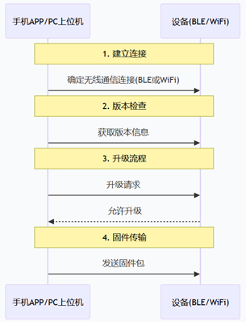

OTA 升级
OTA 将版本发现、镜像传输、完整性校验、分区切换和启动确认串成一个可恢复流程。 图灵平台说明书给出的基本顺序是：无线连接 → 读取版本 → 请求升级 → 发送固件包 → 校验 → 重启。

升级状态机
预检查：确认型号、硬件版本、电量、空闲空间、当前分区和目标版本。
下载：分块写入非活动 Flash 分区或 SD 卡，记录长度和断点信息。
验证：校验完整包哈希、签名、镜像头、目标地址和资源版本。
试运行：把新镜像标记为临时执行，重启后完成外设和关键业务自检。
确认：自检通过后确认当前分区；失败或看门狗复位时回到上一可用镜像。
接口职责
说明书列出了以下 OTA 接口角色，但这些符号未出现在当前公开 HAL 头文件中。接入前应核对所用 SDK 分支的 OTA 服务头文件和分区配置，不要只按名称直接声明函数。
接口 |
职责 |
|---|---|
|
查询当前运行的 A/B 分区 |
|
启动固件或资源下载，并选择 Flash/SD 卡目标 |
|
按偏移写入 OTA 数据，调用方负责边界、对齐和错误恢复 |
|
设置下次临时执行分区 |
|
接受通过试运行验证的新镜像 |
|
最终确认稳定运行的分区 |
应用侧骨架
int app_ota_install(const struct ota_manifest *manifest)
{
int ret;
ret = ota_precheck(manifest);
if (ret != 0) {
return ret;
}
ret = ota_download_to_inactive_partition(manifest);
if (ret != 0) {
return ret;
}
ret = ota_verify_image(manifest);
if (ret != 0) {
ota_discard_candidate();
return ret;
}
ota_mark_trial_boot();
return ota_reboot();
}
发布前验证
在镜像头、正文和最后一个数据块处分别模拟断电，确认旧版本仍可启动。
覆盖包损坏、签名错误、空间不足、低电量、网络中断和重复下发。
将资源包与固件兼容关系写入 manifest，避免固件回退后读取不兼容资源。
试运行确认必须有超时和看门狗策略，不能在启动第一时间无条件接受镜像。
警告
当前平台说明书标注安全启动暂不支持基于版本号的硬件回滚保护。A/B 分区恢复只能提升可用性， 不能阻止攻击者安装签名有效但版本较旧的镜像。